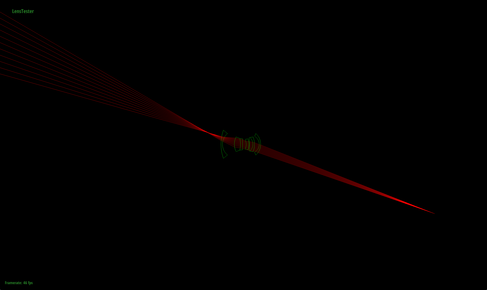
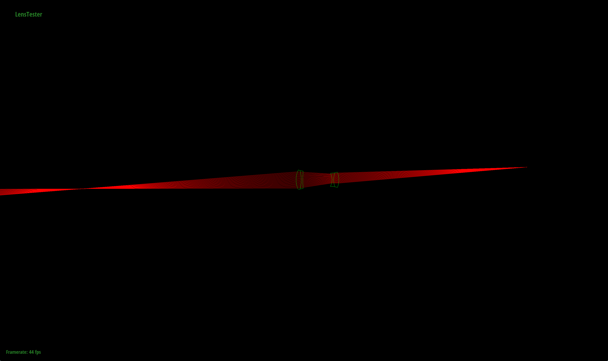

Overall, this project was pretty interesting. However, the first part of the project was signfincantly harder to understand, both conceptually and just physically. It probably would have helped to have more clear diagrams of the rays, etc for the infinty focus and such. The diagram Ben drew in the hw party was extremely extremely helpful.
Part 2 was significantly easier, however it was just toooooo slow.The auto focus we implemented was cool, cause it works okay but only in situations where there is high contrast. However, it runs incredibly slowly. I suffered severely because I tried to select a patch that surrounded one entire sphere, and needless to say, it never finished rendering. Also, in the process of rendering, all the servers were wayy beyond capacity and as a result, it took me 4 hours to render one image. So even though I finished 6pm, after I went to the lab and rendered until 12am, I knew I wasn't gonna finish on time. :(
|
|
Part 1: Ray Generation and Intersection
Task 1
Intersect
After copying in all my code from the previous project, I began implementing tracing.
I first implemented the intersect function. For the most part, I used my code from sphere intersect and used the same quadratic equations, except this time I only return false when discr is less than zero and when the hit point is greater than aperture/2 distance away from the z axis. I calculated this using the following equation
sqrt(P.x * P.x + P.y * P.y) > (aperture / 2)
I also make sure to prioritize the different points based on the direction of the ray, so in the case that r.d.z * radius > 0, I would prioritize the smaller number, and in the case that r.d.z * radius is smaller, I would priority the larger point, because of the direction of the ray.
I also checked in the case that the radius is zero, I would set t according the the following equation and return true because this is the special case of the aperture and is just a planar element.
t = ((c - r.o) dot normal) / (r.d dot normal)
I had problems at first where the rays would reflect in the black space but I found out that it was because I forgot to set the hit_p pointer to my hit point that I calculated using r.o + r.d * t
Refract
For refract, I mainly followed Ben's pseudocode. To start off, I returned true when radius is zero (on the aperture). Then I found the normal which was hit_p - (0, 0, center). I also set the eta to be prev_ior / ior when r.d.z is negative i.e. it is a backwards ray, and ior / prev_ior when r.d.z is positive. I also negate the normal in the case that the dot product of n and -r.d. is less than zero, which means the normal and the ray are not in the same direction. (In my code I checked that it was greater than zero, however, at the end, I don't negate my theta, and two errors cancelled out to be correct, but I never changed it since it was getting the job done).
I make a new coordinate space to get the o2w matrix, and its transfose, the w2o matrix, and I transform the direction of the ray into object space inorder to do my later calculations. So I multiply the w2o matrix by (-r.d) to get wo.
I then calculate the sin^2 theta for the refracted ray using Snell's law
sin^2(theta) = eta*eta*sin^2(wo)
We also know that if the above equation is greater than 1, total internal reflection occurs so I need to return false.
I then calculate the cosine of the refracted ray, which is just the square root of 1 minus the sin^2(theta) I calculated above.
Now I generate a new ray with the origin being the hit point that's passin in. I originally offset the origin like we did in the last project, but it caused problems since I didn't multiply the offset by EPS_D, and that caused the rays to be bendy even at the aperture and my focus values were off by like 3 or 4. Sad life.
I then create the direction vector using (-eta*wo.x, -eta*wo.y, -theta) (once again, I did positive theta in my code, but it cancelled out because of my opposite norm) and multiply that with o2w to get it back to the world space, and normalize it because we should always normalize our direction vectors!
Pass Through
I first call intersect and if it returns true, I call refract and update ior, then I return the boolean that refract returns. If it returns false, I return false.
Trace
In trace, I initialized prev_ior to be 1. Then I iterated from i=0 up to elts.size - 1. In each one of these, I index into elts and call pass through. When pass through returns false, I return false. Otherwise I push the origin of the ray to the end of the trace vector stack unless the stack is null. Then I return true.
For trace backwards, I start at elts.size() - 1, and decrease my index by 1 each time until it's equal to zero. I set prev_ior to be 1 if the index is zero, and the index to be elts[i-1].ior (the previous ior) if it is greater than zero. Then I call passthrough using elts[i], and if it returns false, I return false. Then I push the ray's origin back if the trace vector isn't empty and I return true.
Task 2
Set Focus Params
Infinity Focus: For infinity focus, I start off creating a ray whose origin is at z-axis negative infinity (in my case, -2000) and is slightly offset from the x axis by 0.01 because as we can see in the diagram, the top left ray, which is infinity focus is offset from the main z axis. Then I set the direction of the ray to be (0,0,1), since it's parallel to the z axis. I then trace backwards on this ray, since as we can see, the infinity focus ray is backwards (origin on the left pointing to the right). After finding the next ray, I calculate the time in which the x axis is zero, using the below equation
t = (0 - r.o.x)/r.d.x
I then plug it back into the equation to find the hit point of the ray at time t and set infinity focus to be the z coordinate of this hit point.
Focal Length: I calculated focal length before near focus because I needed to use the value of focal length in my near focus. I found the t of focal length similar to the t of infinity focus, but instead of subtracting r.o.x from 0, I substracted it from the offset of 0.01 instead, in order to create a slight angle so I could calculate its cosine. Then I found the hit point by plugging it back into the equation and found the focal length by taking the absolute value of infinity focus minus the the z coordinate value of the hit point.
Near Focus: Near focus was similar to infinity focus except I had to offset the direction by 0.01 in the x coordinate instead of the origin. In order to found the z value of the coordinate, I had to use the closest object focus depths, which in this case was the backmost lens since my ray is backwards, so I used the following equation to find the closest object's focus depths.
elts.back().center - elts.back().radius - (1 + log(focal_length))*focal_lengthThen for the direction vector, I found the point the near focus ray hits the sensor using (0.01, 0, elts.back().center - elts.back().radius). I then subtracted this point by the origin to get the actual directional vector. I then normalized this direction and passed the ray into trace_backwards. Then using in order to find the time of intersection, I used the same equation from infinity focus and found the hit point by plugging the time back in and set near focus to be the z value of the hit point.
Focus Depth
Focus depth was pretty similar to near focus except it was a forward ray instead. Instead of the z value I calculated earlier for the origin, I passed in the float d, which is the sensor_depth, since the ray starts from the sensor at depth d. Then I found the z value of the sensor using elts.front().center - elts.front().radius and I offset the x coordinate by 0.01. I subtracted this vector by the origin to find the actualy directional vector and normalized it. I think called trace on this new ray and found the t value and the hit point accordingly and returned the z coordinate of the hitpoint.
Back Lens Sample
For back lens sample, I used the sampling of a 2D circle method we learned in lecture. First I set r to by the square root of a random number sampled uniformly using random_uniform. Then I multiplied this number by the actual radius, elts[0].aperture*0.5 to find the r value. I then found the theta values using 2 * PI * random_uniform(). I found z the same way as previous parts, elts[0].center - elts[0].radius. Then I returned a vector where the x value was r*cos(theta), y was r*sin(theta), and z is z.
Generate Ray + Extra Credit
For generate ray, I implemented the extra credit version. I first start off with a boolean named success that starts of as false. Then I keep trying the following steps until a ray succeeds or it exceeds my max attempt of 10 tries.
I followed the code provided in the spec to find the sensor_point. Then I found a random sample by calling back lens sample on the current lens indice. I set the origin of the ray to be the sensor point and hte direction to be sample - sensor_point, normalized. I then find the cosine to the fourth power, which is the ray's d.z raised to the fourth power prior to tracing and store it in the passed in pointer. I then check if tracing this ray succeeds, and if it does, then I set my boolean to true and move onto the conversion part of the code. If it fails, then I add one to the total number of rays_tried, and once this number is greater than 10, I set the cosine factor to 0 and I flip my direction, just to be safe, even though I don't even trace it because of the cosine factor, and I set success to true and I break from the loop into the conversion segment.In order to implement this part, I initialized an int named total attempts in raytrace pixels, and in each loop, I intialize an int named rays_tried to 1 and a double cosine factor. Then I pass these values into my generate ray, and I add the number of rays_tried to the total number of attempts. In the case that the cosine factor is less than or equal to zero, I move on to the next iteration. Otherwise, I multiply the cosine factor by the result of trace_Ray. After the for loop, I divide my summed spectrum by the total number of attempts.
I had bugs in this at first because I initialized rays_tried to 0, however that meant that if a ray passes through on the first try, it would be zero, so that cause problems.
Deliverables
Explain the difference between using a pinhole camera and a fully simulated lens system. What effects can you only see when using a real lens as opposed to only a pinhole?
The key differences between using a pinhole camera and a fully simulated lens system is that a pinhole camera is incapable of capturing the depth of view and zooming. A fully simulated lens system also often has distortion of features of the scene (this can be seen especially in fisheye). Furthermore, a fully simulated lens systems has a blurring of the light that pinhole cameras lack.
Show screenshots of the lenstester app showing ray bundles converging at the a conjugate point for each of the four lenses.
|
|
|
|
|

|
|
|
|
|
|

|
In lens 3, I had to zoom out much much further in order to capture the conjugate point because this lens is a telephoto lens and because of it captures a subject very far away, the conjugate point was also much farther away.
|
|
|
|
This lens was interesting because the forward lens converge before the leftmost lens then spreads out, since it is a fish eye lens and this causes the werid distortion and captures more surrounding elements.
Make a table that shows (for each of the four lenses) focal length as you calculated it, infinity focus sensor depth, close focus distance in front of the lens, and close focus sensor depth.
The results makes sense as near focus is always greater than infinity focus. Also, the conjugate of near focus is always negative as near focus is positive and the world is negative, as a result, the conjugate is always negative.
|
|
Use your focus_depth function to get the world-side conjugates for 100 evenly spaced sensor depths ranging from close focus to infinity. Plot sensor depth vs. conjugate to show the approximate inverse relationship.
In order to plot my graphs, I created a loop within set focus params to iterate through different sensor depths with a step size of (near_focus - infinty focus) / 100 starting from infinity_focus + step size stopping at near_focus. I offset the starting point by one step because it causes problems with fisheye. Then in each loop, I print out focus_depth(sensor_depth) and the sensor_depth.
Notice how all of them are logarithmic and plateau after a certain amount of sensor depth.
|
|
|
|
|
|
|
|
Use the ; and ' keys to get one of the scenes as close to manually focused as you can and save a screenshot at high rendering quality (1024spp, 1splight, 100bounce). Make sure to use a dramatic angle that highlights the defocus blur from using a real lens and maybe also the perspective effects you can achieve.
Note the blurring bokeh effect of the ball towards the back along with the blurring of the corner on the top left. This camera is the gaussian lens so it makes everything blurred other than the subject. Often times this leads to an increase of depth of field and is very nice when taking portrait shots because it separates the subject from the background.
|
|
Part 2: Contrast Based Autofocus
Since the algorithm is part of the deliverables I won't talk about it too much. Once again, this part was pretty easy to understand, however, everything just ran wayyy too slowly.
Deliverables
Document your focus metric, including both the formula you used and an intuitive explanation of why it corresponds to a measure of how in-focus an image is.
For my focus metric, I first calculated the mean using the given function. Then I found the variance by summing up the differences of the rgb channels with the mean and averaging it and taking it to the power of 2. This makes sense because a patch that has higher variance would have more contrast, which means that its features are more defined and thus more in focus. Whereas a patch with lower variance would have less contrast and thus its features are less defined and more blurry. As we learned in lecture 2, in the frequency domain, we can create a blurring effect simply by filtering out the higher frequencies. Thus, intuitively, images with lower frequencies in general would have a lower variance and thus be more blurry.
Explain your autofocus heuristic.
For auto focus, first I creases samples per pixel to 16 and samples per light to 16, then I set the sensor depth of the current lens to infinity focus. I calculate the step size using the following equation:
step = 2*sqrt(36*36 + 24*24) / sqrt(screenW*screenW + screenH*screenH)
This equation finds the range of sensor depths where an image point will blur within one output pixel. So I had to make the size of the circle of confusion to be at most 1 pixel wide and used standard sensor sizes, so the numerator finds the diagonal in millimeters and I divided by the diagonal size measured in pixels. Then we need to calculate the maximum tolerance for sensor depth to keep the object in focus, this is just the f stop multiplied by C, and we assume that the f stop is 2.
I store a variable to keep track of the current max variance and the depth at which this max variance occurs, and I iterate through various sensor depths while the sensor depth is less than or equal to the near focus. In each iteration, I call pt->raytrace_cell(image buffer), then I call focus metric to find the variance of this image buffer. If the variance is greater than my stored max variance, I update the max variance to the current variance and the depth to be the current depth. Then I increase the sensor depth by the step size. This allows me to find the depth at which the variance was highest, which means that the image was the sharpest and most in focus and set my sensor depth to that point.
For one scene of your choice and one small render cell, turn up the settings to high quality (at least 16spp and 16splight and 100bounce) and plot the value of your focus metric versus sensor depth for all sensor depths tested in your autofocus function. You should be able to see the global max at the point where the image is most well focused.
In this part, I rendered the first dragon, however, I couldn't remember what settings it was at but I think auto focus automatically sets it to 16 sample 16 light, I made another just in case. However, the second one wasn't as sharp as the first one, so I decided to keep both. Also I didn't know how to pan the image. I didn't figure out how to pan until I got really bored after submitting my project and went back onto my own laptop. However, it rendered much slower on my own laptop and I didn't want to go back to Soda because I was finally freed from 349 lab (...I was there from 5pm - 12am Tuesday, then 10am to 4pm Wednesday...and I had finally left...). As a result, the data points didn't look as nice and distinct as the previous parts so I'm still keeping the old ones.
|
|
Notice how there's a distinct peak where the variance is highest, and everything around it goes down, and its not rising continuously with no distince max variance
|
|
Notice how in the graph below, although it seems to be consistently rising at the end, there is still a distinct drop after the peak at around 61.2 sensor depth.

|
You probably might not be able to tell, but I focused on a tiny part of the dragon's nose.
|
|
Here is after I very recently figured out how to moved the screen around LOL (hence why I resubmitted)
|
|
You probably might not be able to tell, but I focused on a tiny part of the dragon's nose.
|
|
Pick one scene to concentrate on. Render this scene in high quality (1024spp, 1splight, 100bounce) for a striking view with interesting focus for all four lenses (you can choose different perspectives and points of focus for each lens to highlight their different attributes).
In this first image, we can see the effects of a gaussian blur, where the subject I chose to focus on is very clear but the rest of the image is incredibly blurred. Everything besides the foreground is blurred.
|
|
In this lens, wide angle, I had to zoom in a lot in order to attempt to get the same view of the lens. Because it captures everything since it's wide angled, we see that it has more objects in focus and captures more of the scene in general. As a result, there isn't really much of a blurring effect, if any at all.
|
|
This image was super hard for me to find a good focus point and I had to try over 8 times! The telescopic lens causes everything to be wayyy more zoomed in, and as a result, I had to zoom out to the point where I was almost out of the little chart of the plane. However, because of these, you can get a good image even if you're across the room. On the other hand, you can't really get much of the surroundings and there's less of the background. This might be handy for wildlife photographers who need to take sharp photos from a distance.
|
|
Fish eyes lenses have a noticable distortion of the edges (curving). While it's similar to the wide angled lens in that it can capture more of the surrounding, while the wide angled lens is more of a micro lens (makes things look small) and the subject is further away while the edges are closer, with a fish eyed lens, the subject is much closer and the edges are further (I would say concave or convex but I forget which is which). Both, using their unique traits are able to capture more of the scene in a picture.
|
|